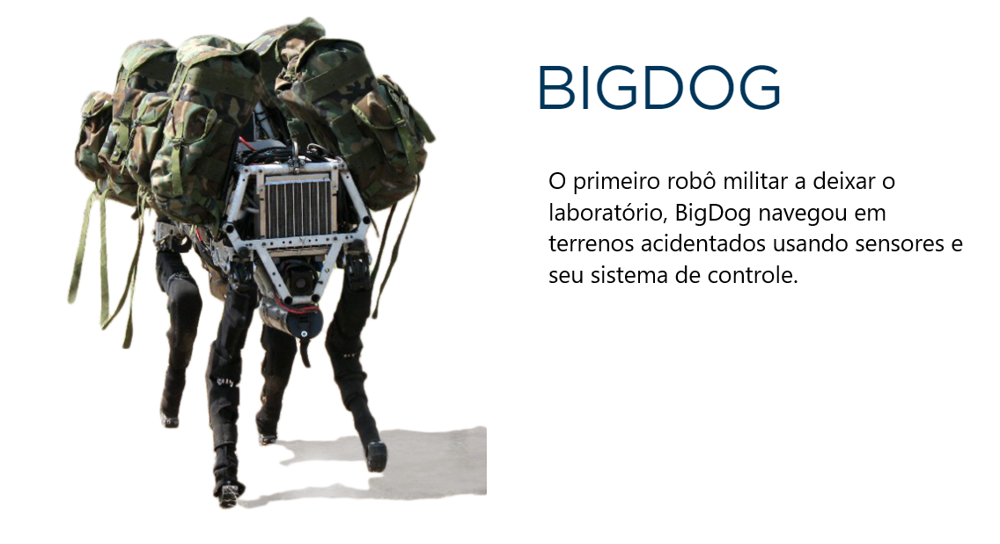

Nosso primeiro robô construido para fins militares. BIGDOG pode ser considerado uma versão pesada de SPOT.
O BIGDOG é um projeto de robô militar, constituindo-se numa espécie de "mula-sem-cabeça" de carga. Esse robô consegue carregar até 180kg em sua estrutura, além disso, ele reage a movimentos ao seu redor, não caindo ao ser empurrado ou caso escorregue, conseguindo caminhar em qualquer terreno (Inclusive gelo).
